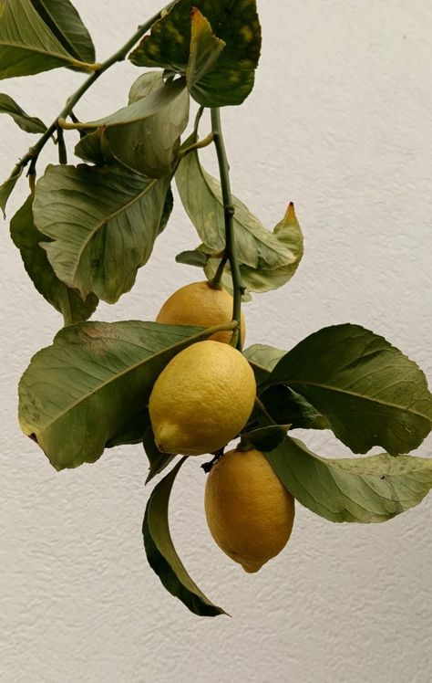

Laravel Social App
Laravel Insta
A social posting application built with Laravel. It includes authentication, posts, comments, likes, follows, user profiles, and admin management screens.
This project is a Laravel application, so the live app requires a PHP server. The portfolio page is provided as a static overview.
